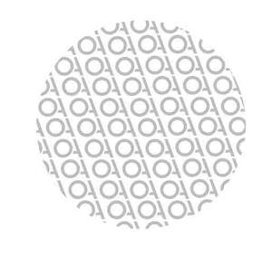

Trade Mark Journal No.2025/043 24 October 2025
UK00004265191 17 September 2025 (10,25,35)

- Class 10
- Clothing, headgear and footwear, braces and supports, for medical purposes; compression garments; medical compression tights; orthopaedic compression supports; body limb compression sleeves for athletic use; compresses for supporting the body.
- Class 25
- Clothing; athletic clothing; sports clothing; athletic uniforms; clothing for gymnastics; jackets being sports clothing; clothes for sports; triathlon clothing; sports garments; sweatshirts; t-shirts; athletic tights; shorts [clothing]; active shorts; clothing for wear in wrestling games; clothing for skiing; headbands [clothing]; clothing for cycling; leisure clothing; padded shirts for athletic use; articles of sports clothing; clothing for wear in judo practices; gloves [clothing]; windproof clothing; golf clothing, other than gloves; wristbands [clothing]; visors [clothing]; garments for protecting clothing; trunks being clothing; sportswear; waterproof clothing; padded shorts for athletic use; sports shirts; moisture-wicking sports shirts; belts for clothing; thermal clothing; padded pants for athletic use; running vests; tops [clothing]; clothing for horse-riding [other than riding hats]; woven clothing; socks; woollen socks; ankle socks; sweat-absorbent socks; non-slip socks; yoga socks; thermal socks; men's socks; tennis socks; sports socks; leggings [trousers]; underwear; sweaters; trousers shorts; tights; underwear (anti-sweat -); bib tights.
- Class 35
- Retail services in relation to clothing; retail services in relation to clothing accessories; retail services in relation to compression garments; retail services in relation to sporting articles; retail services in relation to bags; online retail store services relating to clothing; online retail store services relating to clothing accessories; online retail store services relating to compression garments; online retail store services relating to bags; business management of wholesale and retail outlets; retail services in relation to wearable computers; mail order retail services for clothing, clothing accessories, compression garments, bags.
O AND A SPORTS GROUP LIMITED
Representative: ip21 Limited